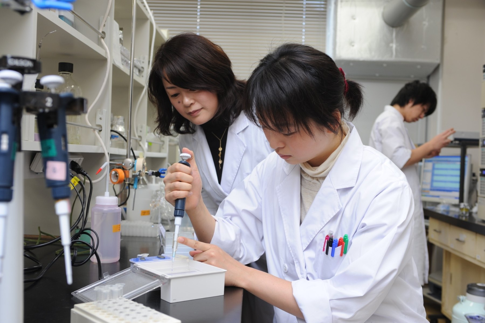
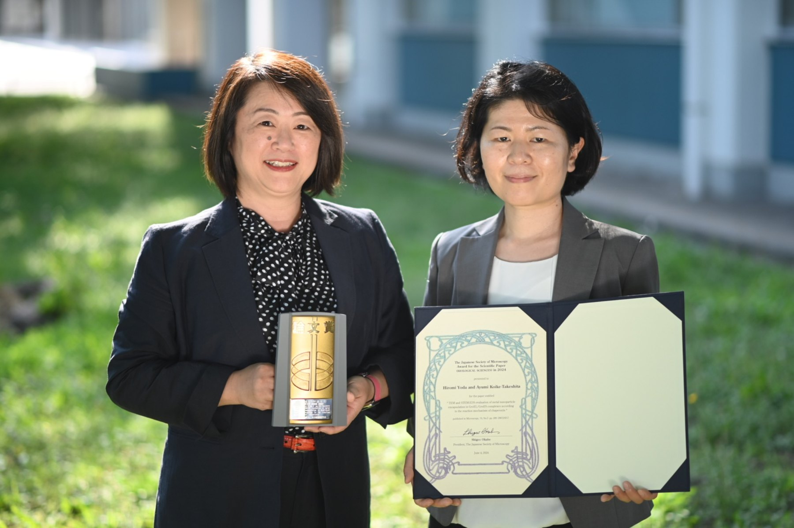
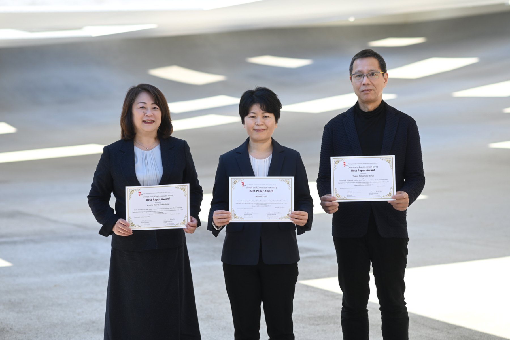
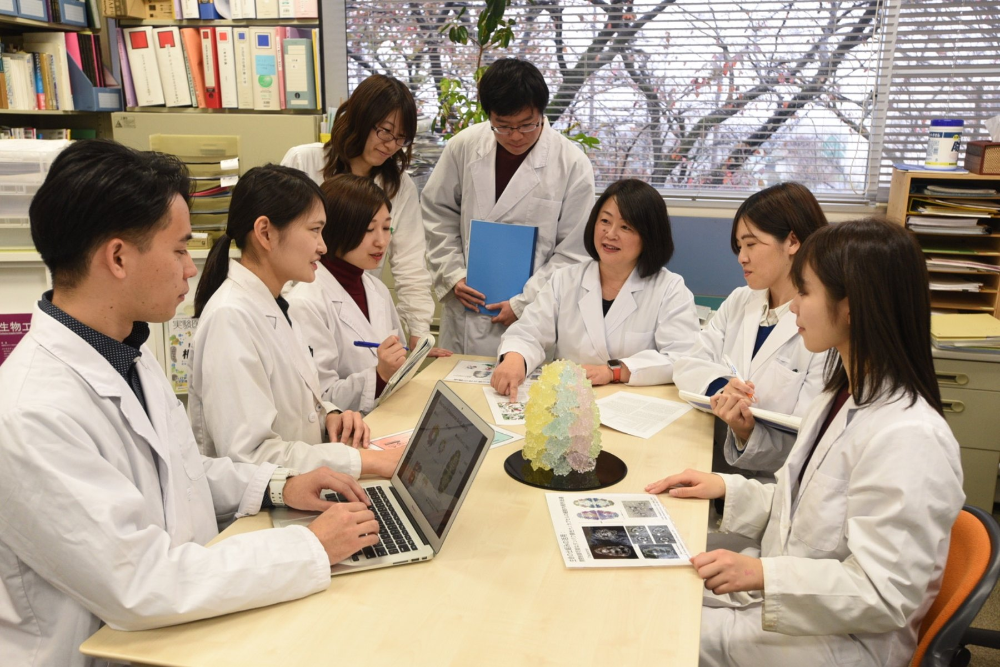
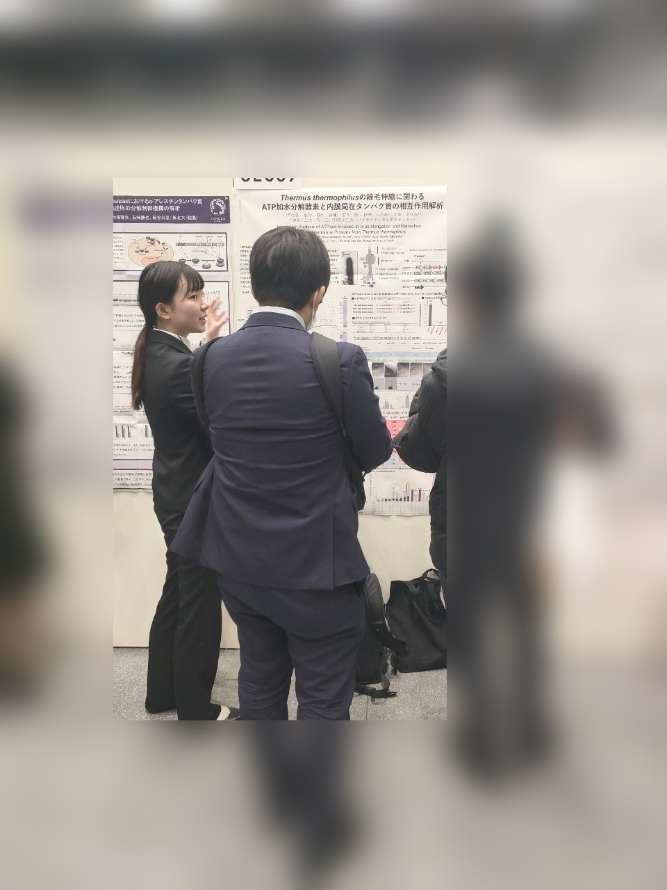
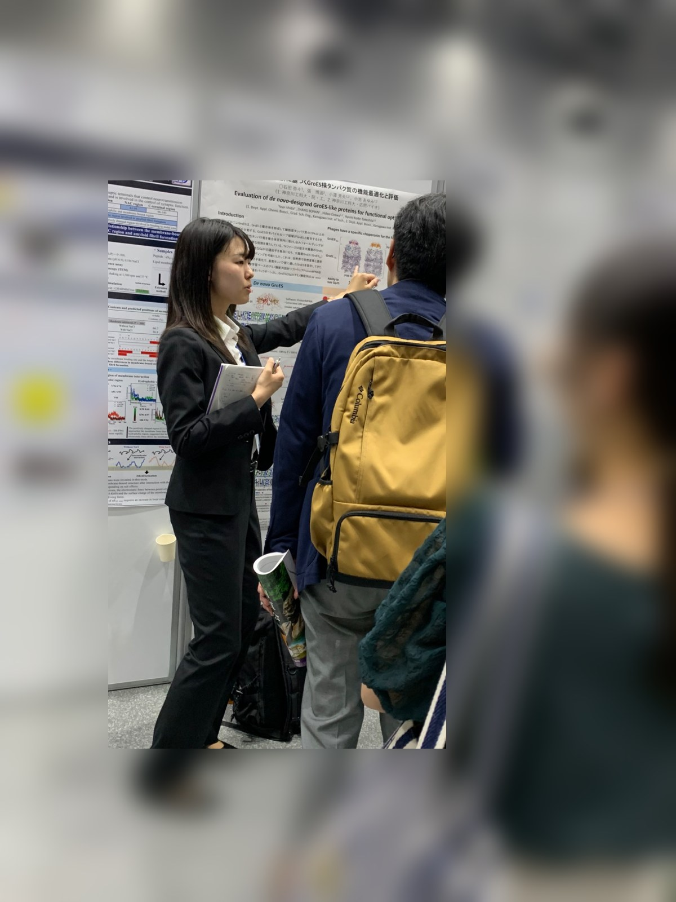

01 / PROTEIN FOLDING
シャペロニンとタンパク質の構造形成
GroEL/GroESなどの分子シャペロンがタンパク質の折り畳みを助ける仕組みを探究しています。異なるシャペロニンの組合せや、構造形成を支える分子間相互作用に注目しています。
タンパク質の構造と機能を理解し、その優れた性質を新しい機能性材料や技術に生かす。生化学実験と構造解析、計算科学を組み合わせて研究を進めています。
神奈川工科大学 工学部 応用化学生物学科
分子機能科学研究室（小池研究室）

分子シャペロン、酵素、微生物のタンパク質を対象に、分子の構造・反応機構と機能との関係を明らかにし、工学的応用につなげる研究に取り組んでいます。
GroEL/GroESなどの分子シャペロンがタンパク質の折り畳みを助ける仕組みを探究しています。異なるシャペロニンの組合せや、構造形成を支える分子間相互作用に注目しています。
シャペロニンの内部空間と開閉機構を利用して物質の内包・放出を制御し、ドラッグデリバリーシステム（DDS）への応用を目指します。
タンパク質の持つ分子空間や機能を活用し、酵素を利用するための固定化プラットフォーム技術を開発しています。
高度好熱菌 Thermus thermophilus の線毛関連タンパク質を対象に、細胞表層構造の形成やDNA取り込みに関わる分子機構を研究しています。
これらの研究の一部は、2026年度 公益財団法人JKA補助事業「開閉を制御可能なタンパク質性ナノカプセルのDDSへの応用」、および科研費 基盤研究（C）（2024～2026年度）「カプセル型タンパク質を利用した酵素固定プラットフォーム技術の開発」の支援を受けて実施しています。
研究室の成果および共同研究による受賞を紹介します。


実験、研究室内での議論、学会での発表を通して、学生が主体的に研究に取り組んでいます。



神奈川工科大学 工学部 応用化学生物学科 教授
分子機能科学研究室
専門：タンパク質工学、分子生物学、構造生物学、生化学
タンパク質の構造と機能に関する研究を基盤に、分子シャペロンの機能制御や機能性材料への応用に取り組んでいます。
文部科学省「私立大学戦略的研究基盤形成支援事業」では研究代表者を務め、当時はバイオメディカル研究センター長として研究拠点の活動を推進しました。
公益社団法人電気化学会 監事（2026年度）。同学会男女共同参画推進委員会では委員長（2021～2022年度）などを歴任。
研究活動とは別に、科学の魅力を伝え、次世代の進路選択を支える活動にも取り組んでいます。